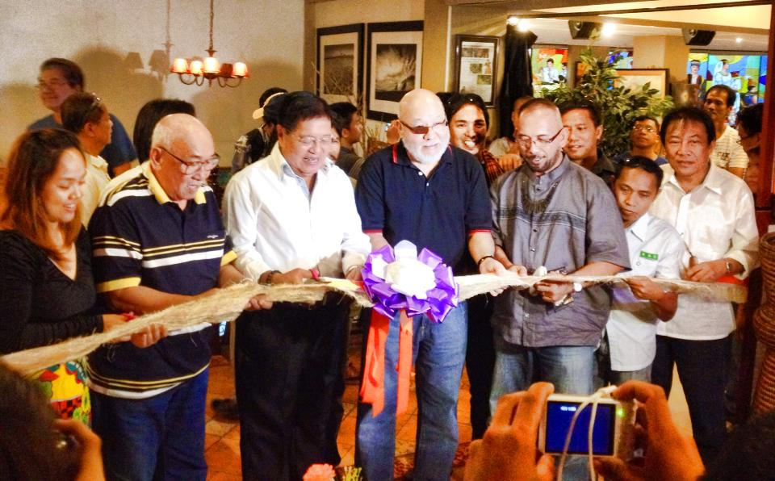
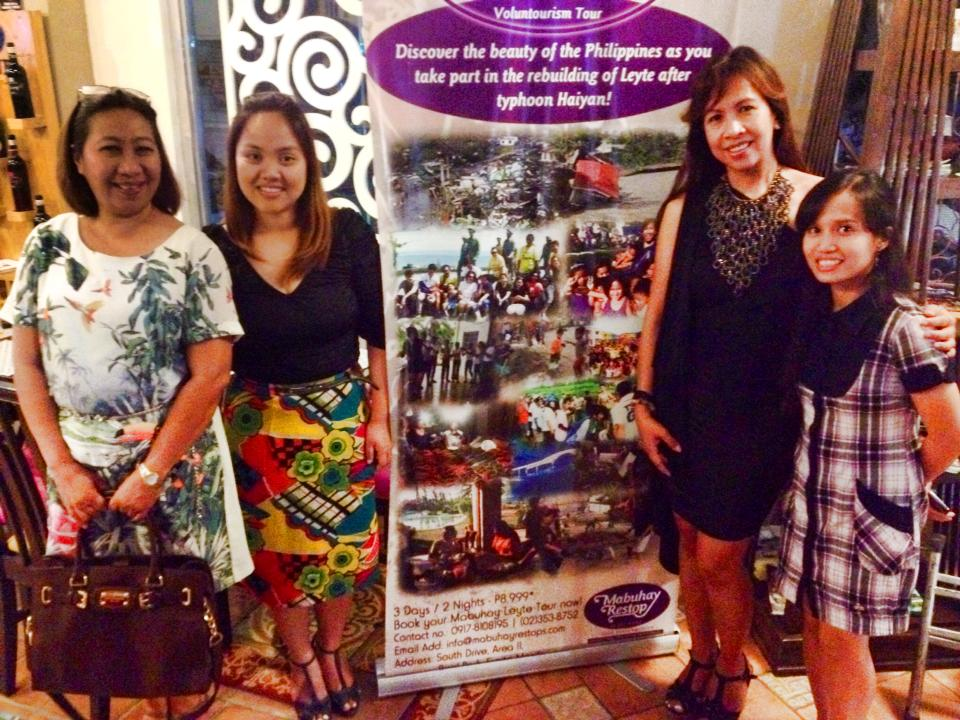

← Back to Portfolio
🏛️ Project Spotlight — Strategic Execution & Stakeholder Management
Strategic Execution &
Stakeholder Impact — Mabuhay Restop
A volunteer-driven social enterprise. National media saturation. Corporate accounts with Accenture, Tourism Promotions Board, and Ms. Earth Philippines. Proof that disciplined, small-team coordination achieves outsized results.
📅 2012–2015
🏢 Mabuhay Restop Camsur, Inc.
🎭 GM / Sales & Marketing Director
📺 National Media Reach
🤝 Multi-Stakeholder Coordination
Media & Partners Engaged
📺
GMA News
National TV Feature
📡
ABS-CBN
Umagang Kay Ganda
Live Coordination
📰
Philippine Daily Inquirer
Earned Media Feature
📋
Manila Standard
Editorial Coverage
🏛️
Tourism Promotions Board
Government Account
🌏
Ms. Earth Philippines
International Engagement
💼
Accenture Philippines
Corporate Account
🤝
Gawad Kalinga & NPDC
NGO / Government Partners
01 — The Mission
Mabuhay Restop operated as a social artistry hub built on the spirit of Bayanihan — a lean, dedicated team translating high-level social visions into functional, daily operations and public-facing results. As General Manager and Sales & Marketing Director, the mandate was clear: represent the organization across every stakeholder tier while keeping operations running seamlessly behind the scenes.
"Seamless scalability isn't a function of team size — it's a function of systems thinking, relationship capital, and the discipline to execute without being visible. The best coordination leaves no trace."
02 — The Execution Architecture
🤝
Executive Liaison — Partner Organizations
Served as the primary coordination point between the Mabuhay Restop leadership and the heads of partner organizations — Gawad Kalinga (GK) and the National Parks Development Committee (NPDC). Ensured shared goals were met with precision and professional alignment, navigating the complex intersection of social enterprise, government, and NGO interests.
📺
National Media Coordination
Coordinated nationwide media features across GMA News, ABS-CBN's Umagang Kay Ganda, and Gandang Ricky Reyes. Focus was on execution precision: consistent messaging, flawless live demonstrations, and managing the gap between what the media needed and what the organization could deliver — reliably, every time.
Channels: GMA News · ABS-CBN Umagang Kay Ganda · PDI · Manila Standard · Gandang Ricky Reyes
🏢
Corporate Account Development
Secured and managed high-value corporate accounts — Tourism Promotions Board, Ms. Earth Philippines, and Accenture Philippines — by demonstrating consistent operational reliability and professional brand management. Each account required a different relationship approach, from government protocol to international NGO engagement to corporate service standards.
🌟
High-Profile Event Management
Led the operational rollout of key community and public-facing initiatives: the "Kiddie Paskuhan" for underprivileged children, the "With Love, Pope Francis" production, the Ang Pagbangon Art Exhibit in Eastern Visayas, and the Katy! press launch — managing stakeholder relationships, logistics, and live execution simultaneously.
🏛️
Operational Leadership in Director Absence
Acted as the organization's lead representative during executive absence — managing high-profile interactions with media, government officials, and international dignitaries. This included the Global Media Center (GMC) engagements, Manila City Hall press briefings, and DOT Region 7 coordination — maintaining the organization's reputation under public scrutiny.
Accounts Secured
🏛️
Tourism Promotions Board
Philippine Government Agency
🌏
Ms. Earth Philippines
International Pageant / NGO
💼
Accenture Philippines
Global Management Consulting
🤲
Gawad Kalinga (GK)
National NGO Partner
Evidence Gallery
Drop your images into the images/ folder and update the src attributes below.
Use: UKG.jpg · GMC.jpg · PTM-1.jpg · Ms-Earth-1.jpg · DOT-Region-7.jpg etc.

🎗️
images/Ribbon-Cutting.jpg

🏛️
images/DOT-Region-7.jpg
03 — The Strategic Impact
📡
National Media Saturation. A small, volunteer-driven team achieved coverage across GMA, ABS-CBN, PDI, and Manila Standard — through disciplined coordination and consistent messaging execution, not marketing budget.
🤝
Stakeholder Trust at Scale. Built lasting professional bridges with corporate and government leaders by serving as a consistent, dependable, and professionally mature point of contact across all stakeholder tiers.
🏗️
Reliable Leadership in High-Stakes Moments. Demonstrated the professional maturity to step into full organizational representation during critical moments — maintaining brand reputation and operational continuity without executive presence.
💡
Proof of the Principle. Seamless scalability is achievable without large teams or large budgets — given the right systems thinking, relationship management discipline, and execution culture. This is the operating principle behind all subsequent work.
Competencies Demonstrated
Executive Liaison
Stakeholder Management
Media Relations
Brand Strategy & Execution
Corporate Account Development
Event Management & Production
Government Relations
NGO Partnership Management
Crisis Representation
Cross-Sector Communication
Operations Leadership